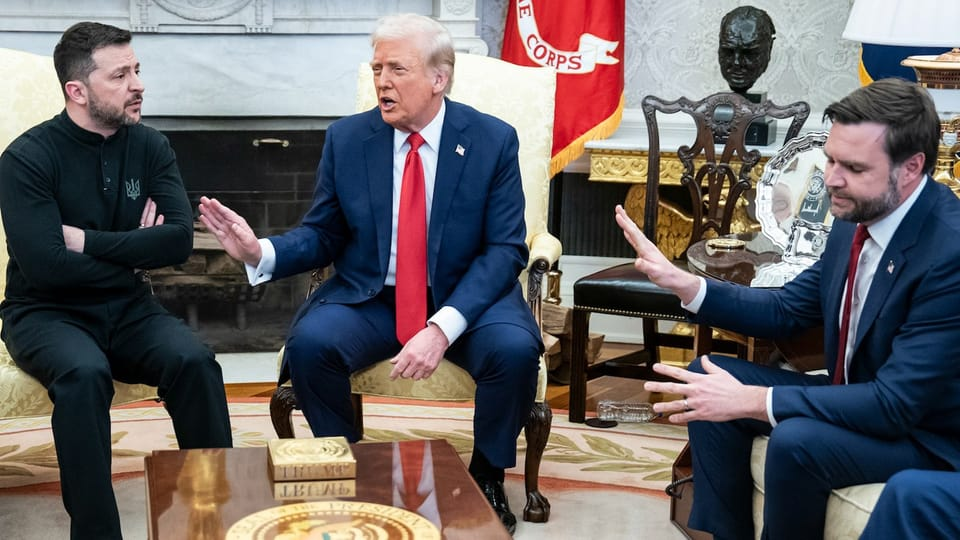

世界苦茶03月01日新闻 | 38条 | 特朗普与泽连斯基的会谈变成一场争吵

特朗普与泽连斯基的会谈变成一场争吵 | 美欧关税谈判没有进展 | 习近平会见绍伊古 | 英国首先邀请欧洲领导人明天召开特别峰会 | 比特币遭遇巨大跌幅 | 三名日本人被中国公安拘留
苦茶数据
美元兑人民币：7.29（昨日7.29，前日7.27）
美元兑日元：150.62（昨日149.68，前日149.17）
上证指数：休市（昨日3320，前日3358）
标普500指数：休市（昨日5954，前日5956）
比特币：85686（昨日80436，前日84905）
布伦特原油：72.81（昨日73.66，前日72.75）
中国新闻
• 台湾限制高校与中国七所军工大学交流 ：台湾教育部上周禁止台院校与三所隶属中共中央统战部的大学合作交流后，教育部长郑英耀星期五进一步限制台高校与七所与中国大陆国防军事工业密切相关的大学交流。郑英耀在接受《自由时报》一档节目专访时说，教育部不鼓励与七所大陆高校，即“国防七子”进行交流。他说，尽管这些学校在学术上表现优异，但出于对关键技术可能被窃取的担忧，台湾教育部将对这些学校的交流采取限制。这七所学校分别是：北京理工大学、南京理工大学、北京航空航天大学、南京航空航天大学、哈尔滨工业大学、哈尔滨工程大学和西北工业大学，是直属于中国大陆工业与信息化部的七所高校，这几所高校科学研究方向偏重于国防。
• 台防部批中国是全球“麻烦制造者” ：中国大陆国防部批评台湾汉光演习扩大规模时喊话民进党：“早晚要来收了你们”，台湾国防部星期五反击，指北京不断升高军事威胁，已是国际社会最大的“麻烦制造者”。台湾国防部强调，今年适逢第二次世界大战80周年，历史证明，任何形式的侵略和扩张，都将以失败告终。综合路透社和联合报报道，台湾国防部在一份声明中说，北京近期不断升高在印太、乃至全球的军事威胁，公然挑战国际秩序、破坏区域稳定现状，已成为国际社会最大的麻烦制造者。相关举动除凸显霸权心态，也难掩实质威吓的真正企图。声明说，今年适逢第二次世界大战80周年，历史已经证明，任何形式的侵略和扩张，最终都将以失败告终。大陆军方近年的行动，正重蹈侵略者的覆辙，执迷不悟地将自己推向败亡的方向。
• 澳洲反对泰国遣返维吾尔人 ：澳大利亚外交部长黄英贤星期五说，澳洲强烈反对泰国政府强行将40名维吾尔族人遣送回中国，并就他们的待遇向中国政府表达关切。据路透社报道，黄英贤在一份声明中说：“澳洲政府强烈反对泰国政府强行将40名维吾尔族人遣返中国的决定。”黄英贤说，澳洲对新疆的人权状况，以及维吾尔族和其他穆斯林少数群体在中国的处境深感关切。“我们已多次向泰国政府表达我们的担忧，并已向中方提出对该群体待遇的期待。”
• 英国能源部长3月或访华 ：中国和英国关系持续回暖，英国能源部长米利班德3月据传将访问中国。如果成行将是英国工党政府去年10月以来、第三名访华的内阁要员，表明伦敦目前寻求与中国建立更紧密联系，以应对中美和中欧关系中的不确定性。路透社星期五引述三名消息人士透露米利班德3月将访问中国的消息。英国官员表示，希望重新调整之前保守党政府对中国的许多立场，特别是在接受中国创造就业的投资，以及允许中国公司提供核电站等关键基础设施方面。
• 香港政府批美国干涉港事务 ：美国国会议员提出决议，谴责中国政府通过《香港国安法》等破坏香港自治，香港政府对此表示强烈谴责，并要求美方停止贬低香港国际声誉，粗暴干涉纯属中国内政的香港事务。美国国会参议院外交关系委员会两名议员星期三提出一项决议，谴责中国政府通过《香港国安法》和俗称《基本法》23条立法草案的《维护国家安全条例草案》破坏香港自治，剥夺香港民众的基本权利。根据港府新闻公报，港府发言人星期四形容上述举措为“卑劣的政治操作及肆意叫嚣”，并对此予以强烈谴责及反对，同时要求美方立即停止贬低香港国际声誉，粗暴干涉纯属中国内政的香港事务。
• 三名日本人被中国公安拘留 ：中国和日本关系再度出现不确定性因素。三名日本人据报本月在北京被中国公安部门以涉嫌违反出入境管理法为由拘留。日本共同社星期四引述日中关系相关人士透露上述消息。三名被拘日本年龄介于40岁至60多岁。报道称，十四届全国人大三次会议将于3月5日在北京开幕，中国可能加强了对违法行为的查处。
亚太印太新闻
• 泰国将遣返5000名诈骗园区工人 ：泰国已同意与缅甸和中国合作，遣返数千名滞留在泰缅边境的诈骗园区工人。预计，泰国将从下个星期开始，陆续遣返约5000名中国公民。缅甸边防部队近期从克伦邦妙瓦底的诈骗园区，解救了7000多名外籍工人。他们来自29个国家，主要是中国公民。法新社报道，泰国外交部长玛里、中国公安部部长助理刘忠义和缅甸内政部副部长昂觉觉，星期五在曼谷举行会议。泰国外交部发言人尼功德会后告诉记者，从下周开始，泰国会以每周1000人的频率，遣返大约5000名中国公民。
• 日本推进警察和法庭数码化 ：日本政府计划将警方调查和法庭审判程序数码化，以加快执法速度。据时事通信社报道，日本内阁星期五举行会议并通过立法草案，推动警察在签发和执行逮捕令，以及搜查令的程序数码化。日本政府已在同天将修订案提交国会众议院，并希望在2027年3月前落实改革。
• 印度喜马拉雅雪崩，至少25人被困 ：印度北阿坎德邦的喜马拉雅山发生雪崩，目前仍有至少25人被困雪下。路透社引述当地媒体报道，这起事故发生星期五，地点位于北阿坎德邦查莫里地区的一条高速公路附近，处于印度与中国西藏接壤的边境地区。军方的一份声明称，雪崩袭击联邦边境道路组织的一个工地，八个集装箱和一个棚屋被埋，里面有57名工人，截至星期五晚些时候，已经找到五个集装箱，其余三个仍在搜寻中。
• 赖清德纪念二二八，批评蒋介石 ：台湾总统赖清德星期五出席二二八事件中枢纪念仪式，致辞时用“独裁者”一词来形容已故国民党强人蒋介石，并指中国大陆并没有放弃武力并吞台湾。据台湾总统府官网发布的致词内容，首次以总统身份出席二二八事件中枢纪念仪式的赖清德，首先代表台湾道歉，并指二二八事件发生的原因不是族群冲突；把整个二二八事件推给族群冲突是毫无反省、毫无歉意，完全不负责任，非常不应该的行为。在二二八发生的原因方面，赖清德说，来自大陆的军队，经过北伐、抗日、剿匪，连年战争，“他们的生活水准当然和台湾社会无法比较，他们偷、抢、破坏，生活文明的落差引起社会天怒人怨，一片反弹，加上陈仪部队军纪败坏，以及独裁者蒋介石在大陆战局节节败退情形下，为了确保能来台湾统治，所以犯下滔天罪行。”
• 朝鲜试射导弹，展现核威慑能力 ：朝鲜当局星期五宣布，已在星期三进行了战略巡航导弹发射训练，展现核威慑能力。朝鲜领导人金正恩到场观摩，并下令以核武力量保持高度应战态势。朝鲜当局日前宣称，美国总统唐纳德‧特朗普政府上任来,美国领导的敌对行动升级，平壤矢言将予以回应。朝鲜官媒朝中社报道，星期三在朝鲜半岛西部海域进行导弹试射，导弹精准打击靶标。这是朝鲜今年第四次进行导弹试射，也是特朗普总统第二任期以来第二次。
科技新闻
• 比特币因市场动荡大跌 ：比特币自1月历史高位已回跌超过25%，并持续受压。在美国总统特朗普发出最新关税威胁后，投资者纷纷转向安全资产。比特币星期五一度下跌多7.1％。这标志着“特朗普交易”之一，遭遇戏剧性的现实考验。彭博社报道也称，比特币至此已跌至去年11月初以来最低位。这次抛售发生在加密货币普遍暴跌之际，以太币、Polkadot和XRP星期五均下跌超过7％。BTC Markets私人有限公司首席执行官卡罗琳·鲍勒表示：“我们上次看到这样的情绪是在2022年。”她指的是“加密货币寒冬”，当时由于利率上升和行业困境，加密货币的价格暴跌。
• TikTok宣布未来五年投泰国80亿 ：中国短视频应用TikTok计划未来五年内在泰国投资80多亿美元，用于建设人工智能数据中心。这个数字比TikTok之前为泰国设定的投资目标翻了一倍多。彭博社报道，泰国首相佩通坦星期五在曼谷会见TikTok母公司字节跳动的新市场及公共政策副总裁勒施。勒施表明，字节跳动最有价值的服务是建立基础设施，支持泰国国内用户，包括约5000万TikTok用户。勒施也宣布，TikTok在未来五年内将对泰国投资88亿美元。不过，她并未透露具体投资计划。
• OpenAI 首席执行官表示公司“没有GPU了”： 人工智能公司 OpenAI 首席执行官萨姆·奥尔特曼表示，由于 OpenAI “没有 GPU 了”，公司被迫分阶段推出其最新模型 GPT-4.5。奥尔特曼在 X 上的帖子中表示，“庞大”且“昂贵”的 GPT-4.5 还需要 “数万” 个额外的 GPU 才能让更多 ChatGPT 用户获得访问权限。该模型将于周四首先向 ChatGPT Pro 订阅者推出，随后于下周向 ChatGPT Plus 用户推出。奥尔特曼说：“我们增长很快，已经没有 GPU 了。我们将于下周增加数万个 GPU，并将其推广到 Plus 层级，这不是我们希望的运营方式，但很难完美预测导致GPU短缺的增长激增。”
财经新闻
• 马克龙称美关税谈判无进展 ：法国总统马克龙说，美国加征关税问题取得进展的希望非常渺茫，欧盟计划实施对等关税予以回应。综合路透社和法新社报道，马克龙结束本周的访美行程，他星期五对葡萄牙进行国事访问时表明，在美国加征关税这个问题上，取得进展的希望不大。美国总统特朗普近日声称决定对欧盟征收25%关税，并将很快宣布这一举措，这个税率适用于从欧盟进口的汽车和其他各种商品。他还宣布从3月12日开始，对所有进口钢铝加征25%关税。（翻评：美国自断）
• 日本食品预计2025年大规模涨价 ：日本企业预测，受原材料成本和人力成本上涨等因素影响，日本2025年可能有超过1万种食品涨价。日本共同社报道，根据日本帝国数据公司星期五发布的预测，今年日本将有超过1万种食品涨价，且涨价势头可能超过2024年。这主要是因为原材料加格上涨，以及物流和人力成本提高。日元贬值导致进口食材涨价，大米等国产原材料价格也在上升。此外，加薪举措给企业带来更高的人力成本，可能继续转嫁给消费者。
• 美加征关税，中国股市受挫 ：中国大陆和香港股市星期五双双下挫。美国总统特朗普表示要在2月对中国商品加征10％关税的基础上、3月4日再额外加征10％，打击了风险情绪。据彭博社报道，亚太主要市场上午普遍下跌，恒生国企指数跌2.5％，表现落后；阿里巴巴、美团等科技股拖累指数。A股沪深300指数下跌0.8％，前期大涨的信息技术板块和电信股跌幅居前。
• 中国2023年碳强度目标未达成 ：官方数据显示，中国去年未能实现碳强度目标。中国国家统计局星期五在官网发布2024年国民经济和社会发展统计公报显示，中国去年的碳强度，即单位国内生产总值的二氧化碳排放量，同比下降3.4%。这低于官方设定的3.9%目标。法新社报道称，这也导致中国未能跟上2020年至2025年减少碳排放18%的目标进度。
• 美国通胀再度升温 ：无论以什么指标衡量，美国通货膨胀率都是再次朝着错误的方向发展。无论是房子抑或鸡蛋，一系列指标的价格涨幅均再度加剧。这在很大程度上与同样导致疫情初期通胀激增的供求因素和劳动力市场压力有关，美国总统特朗普计划征收的关税则加剧人们对物价将进一步上涨的担忧。从投入成本到工资增长再到通胀预期，一系列报告显示价格压力再度抬头，凸显出美联储暂时维持利率不变的意图。政策制定者青睐的核心通胀率指标可能在1月份回升。
• G20财长会议未达成共识 ：齐聚开普敦的二十国集团财长未能就气候融资等一系列问题达成共识。缺乏协议意味着集团无法发布公报，而只是发布会议纪要。南非财长埃诺格瓦纳在星期四的闭幕新闻发布会上说，“自俄乌战争开始以来很难发联合公报”。在这次会议上，“在许多其他议题，包括气候融资问题方面出现新的分歧，导致难以达成联合公报”。 （翻评：这会成为未来几年的主轴，G7和G20内部的纷争和共识的减少。）
• 中国批美以芬太尼为由加税是甩锅 ：美国以芬太尼问题为由对中国商品再加征10%关税，中国商务部批评，此举纯属“甩锅推责”，无益于解决自身问题。中国商务部星期五以发言人答记者问形式回应此事时说，中方多次表明，单边关税违反世贸组织规则，破坏多边贸易体制，中方对此坚决反对。发言人称，中国是世界上禁毒政策最严格、执行最彻底的国家之一，积极与包括美国在内的世界各国开展禁毒国际合作。美方却始终无视客观事实，此前以芬太尼等为由对中国加征10%关税，这次又威胁再次加征关税。
• 墨西哥或效仿美国对中国商品征收新关税： 美国财政部长贝森特称墨西哥已提议效仿美国对中国加征关税，并敦促加拿大跟进。贝森特接受采访时表示，墨西哥政府提出了一个非常有趣的建议，即或许墨西哥能与美国保持一致，对中国采取相同规模的税率。”他说：“如果加拿大也这么做，我相信这会是一个不错的举动。这样一来，我们就可以在某种程度上打造‘北美堡垒’，以应对中国进口商品的涌入。”据知情人士透露，墨西哥官员愿意提高对中国商品征收的关税，并加大从美国进口商品，以避免美国总统特朗普的关税威胁。墨西哥可能对从中国进口的汽车、汽车零部件以及部分制成品征收关税。
俄乌战争
• 俄罗斯任命新驻美大使 ：俄罗斯任命达尔奇耶夫为新任驻美国大使，填补这个自2024年以来一直空缺的职位。法新社报道，俄罗斯外交部星期五宣布，任命亚历山大·达尔奇耶夫为新任驻美大使，预计他会在近期启程赴华盛顿履新。莫斯科与华盛顿星期四在土耳其举行长达六小时的会谈，尝试改善双边关系。会谈主要讨论双方驻对方国家使馆运作问题，涉及人员配置、签证等，俄方也建议华盛顿考虑恢复两国直飞航班。
• 俄美土耳其会谈，称务实高效 ：俄罗斯说，莫斯科与华盛顿在土耳其举行的最新一轮会谈务实高效，俄方曾建议恢复与美国之间的直飞航班。俄罗斯和美国星期四在土耳其伊斯坦布尔举行长达六小时的会谈。综合路透社和法新社报道，俄罗斯外交部星期五发布声明，称赞这次会谈务实且高效。双方声称希望谈判结束俄乌战争，并讨论达成重大商业交易的可能，但首先关注改善双边关系。俄罗斯总统普京星期四说，与特朗普政府的初步接触带来了希望，他警告“西方精英”（指英国和欧盟）不要破坏这些接触。
• 习近平会见俄安全会议秘书 ：中国国家主席习近平在会见到访的俄罗斯联邦安全会议秘书绍伊古时指出，中俄是山水相连的友好邻邦，更是百炼成钢的真心朋友。据中国央视新闻报道，习近平星期五下午在北京人民大会堂会见绍伊古。习近平指出，他今年同俄罗斯总统普京已两次交流，对中俄关系发展作出顶层设计，就一系列重大国际和地区问题深入沟通。今年是中国人民抗日战争、苏联伟大卫国战争暨世界反法西斯战争胜利80周年，也是联合国成立80周年。在这样一个具有特殊历史意义的年份，中俄关系将迎来一系列重要议程。
• 特朗普与斯塔默因乌援问题起争执 ：美国总统特朗普在白宫与到访的英国首相斯塔默会谈时，双方围绕英国等欧洲国家能否收回援助乌克兰资金的问题发生分歧，斯塔默公开反驳特朗普，称英国对乌援助的一大部分是“馈赠”，不会收回。在星期四双方闭门会谈开始前会见记者时，特朗普针对近日在美俄谈判和美乌矿产协议等问题上他与乌总统泽连斯基发生的口角说，两人彼此“生了一点小气”，因为美国也想像欧洲国家那样从对乌援助中得到点什么。
• 俄经济特使拉拢美企，推动合作 ：俄罗斯对外经济合作特使德米特列耶夫本周自2012年以来首次在马斯克的X社交媒体平台上撰文，宣布美俄合作是“应对世界挑战的关键”。他随后发一条视频图像，描绘与美国和沙特阿拉伯似乎在马斯克的一个太空探索技术公司火箭上联合执行的火星任务。对于俄罗斯总统普京的这名新任对外经济合作特使而言，关注马斯克征服“红色星球”的宏伟梦想绝非偶然。德米特列耶夫有一项重要任务——让美国总统特朗普和马斯克等高级顾问对与俄罗斯达成重大商业交易的前景颇感兴趣，以此作为对克里姆林宫有利的条件结束乌克兰战争的诱饵。
• 台湾关注美对乌政策变化，强调自卫 ：美国特朗普政府削弱对乌克兰的支持，促使外界对华盛顿会否协助保卫台湾产生疑问。台湾副行政院长郑丽君说，台湾一直密切关注乌克兰的局势发展，并称将提升台湾的防卫能力，包括发展本土军用无人机。据彭博社星期五报道，郑丽君受访时发表上述言论，并称“我们正在密切关注特朗普政府的政策”。她认为，“对台湾而言，现在最重要的是如何在印太地区承担起自身的责任”，并强调增强防卫能力是维护和平的基础。
• 泽连斯基与特朗普争执后，提前离开白宫 ：泽连斯基与特朗普、万斯爆发激烈争吵后提前离开白宫，会晤不欢而散。会晤最初进展顺利。特朗普多次表示不需要安全保障，俄罗斯在签署和平协议后不会返回乌克兰，泽连斯基反复摇头。泽连斯基强调普京需要为入侵付出代价。氛围紧张开始于万斯的加入。万斯批评拜登的和平策略，表示需要与俄罗斯开展外交。泽连斯基表示曾经多次与普京签署协议，但普京多次违反协议，询问应开展什么样的外交。万斯指责泽连斯基在美国媒体提出立场是不尊重，并指出乌克兰面临人力短缺，多次呼吁泽连斯基感恩。泽连斯基说美国现在没有感受到俄罗斯的影响，但警告将来会感受到。特朗普称，泽连斯基没有资格告诉美国会有什么感受。特朗普说泽连斯基的局势不佳，手中无牌，来到这里开始有牌。泽连斯基表示自己没有在打牌，非常认真。特朗普称泽连斯基是在拿数百万人的生命和第三次世界大战做赌注在打牌。万斯再次提出要感恩美国。泽连斯基多次试图发言，但被特朗普打断。特朗普威胁泽连斯基说，如果没有美国装备，战争将在两周内结束。万斯又指责泽连斯基没有说谢谢。泽连斯基说他说了很多次谢谢。特朗普指责泽连斯基不想停火。泽连斯基说当然想停止战争，但需要安全保证，并希望特朗普听听乌克兰人民的看法。特朗普要求泽连斯基更加感恩，因为“有我们，你有牌，但没有我们，你就没有任何牌”。随后两位领导人进入了不同的房间，特朗普要求乌方离开。乌方抗议并希望继续谈判。但白宫官员说已被告知没有谈判。原定的联合新闻发布会被取消。泽连斯基在没有签署协议的情况下乘车离开。特朗普发文再次指责泽连斯基不尊重美国，但表示当泽连斯基准备好迎接和平时他可以回来。泽连斯基发文：“感谢美国，感谢你们的支持，为这次访问感谢你们。感谢美国总统、国会和美国人民。乌克兰需要公正和持久的和平，我们正在为此而努力。”
• 特朗普与泽连斯基争吵后互相发表后续表态： 特朗普在白宫争吵后发表讲话，再次指责泽连斯基想继续战斗，而他想要尽快结束战争。如果要恢复谈判，泽连斯基必须说他想要和平。泽连斯基在接受福克斯新闻采访时没有道歉，但相信他和特朗普的关系可以得到挽救。他说这不仅涉及两位总统，更是历史性关系，人民间的牢固关系。虽然要感谢总统和国会，但首先需要感谢人民。泽连斯基说，“我不确定我们做了什么坏事”，但承认这场争吵“对双方都不利”。“我只是想说实话，我只是希望我们的伙伴正确地理解情况”。在被问及是否会辞职时，他表示这个决定只能由乌克兰人民做出。在国际社会，加拿大、德国、英国、澳大利亚、丹麦、摩尔多瓦、西班牙、挪威、捷克、荷兰、爱沙尼亚、波兰等国家的领导人及欧盟委员会主席均发声支持乌克兰。意大利总理呼吁西方国家团结，表示将和盟友讨论如何应对巨大挑战。匈牙利总理欧尔班则称赞特朗普维护和平。俄罗斯联邦安全会议副主席梅德韦杰夫评价泽连斯基在“在椭圆形办公室里穿着野蛮”。在美国国会，许多共和党人称赞特朗普，包括曾经支持乌克兰的南卡州参议员格雷厄姆、国务卿鲁比奥、众议院议长约翰逊等；部分共和党人未明确表态。民主党人则压倒性地支持泽连斯基，批评特朗普。在乌克兰国内，受访官员和民众均称赞泽连斯基为国家尊严和利益挺身而出。也有人对未来感到担忧。一名反对派议员认为泽连斯基受到了特朗普和万斯的“攻击”，这种情况不可接受。
• 美国务院终止对乌克兰电网恢复的支持： 据两位在国际开发署乌克兰任务中工作的官员透露，美国国务院本周终止了一项由美国国际开发署发起的计划，该计划已投入数亿美元，帮助乌克兰从俄罗斯军事袭击中恢复其能源网络。由于对能源设施的袭击，乌克兰部分地区夜间实施了停电。在长达三年的战争中，该国的能源系统几乎持续受到冲击。一位参与乌克兰任务的 USAID 官员对 NBC 新闻表示：“这大大削弱了本届政府在停火谈判中的能力，并且向俄罗斯发出了我们不在乎乌克兰或我们过去投资的信号。” 该官员继续说道：“俄罗斯在乌克兰打的是一场双线战争：军事战争和经济战争。他们试图摧毁乌克兰经济，但 USAID 在帮助其保持韧性方面发挥了核心作用，包括支持能源网络…… 我们为乌克兰政府提供了大量支持，以避免宏观经济危机。” （翻评：这不是今天之后发生的新事情。）
• 中国三月或增俄伊原油进口 ：路透社周五消息，业内人士预计，中国对俄罗斯远东原油和伊朗石油的进口量将在三月份反弹，反弹的理由是不在美国制裁范围的油轮的利润前景看好，这些油轮将取代受到禁令影响的油轮，承担起相关原油运输业务。消息人士和分析师们表示，全球最大的原油进口国中国的原油进口量反弹将会缓解原油供应紧张和国际原油价格上涨的势头。自去年十月以来，华盛顿对运输伊朗和俄罗斯原油的船只和实体实施了多轮制裁，这不可避免地影响到中国和印度等主要原油进口国的原油贸易。
其他新闻
• 以哈在开罗进行停火协议谈判 ：埃及官方信息机构报告说，以色列和哈马斯在开罗开始就停火协议的第二阶段进行谈判，一天后，停火协议第一阶段就将到期。哈马斯被美国认定为恐怖组织。埃及国家信息服务局在其网站上的一份声明中表示，以色列和卡塔尔代表团星期四晚抵达开罗，并开始“就停火协议的后续阶段进行密集讨论”。卡塔尔跟美国和埃及一起在斡旋谈判。声明接着说，“作为减轻平民苦难和支持地区稳定更广泛努力的一部分，斡旋方还在探索如何加强向加沙运送人道主义援助。”
• 特朗普政府裁撤气象机构人员 ：特朗普政府解雇数百名负责天气预测和气候研究的联邦政府机构员工，引发美国民众对政府在预测和应对林火、龙卷风等灾难方面能力的担忧。受影响这一波裁员影响的是美国国家海洋和大气管理局。NOAA属下还有国家气象局和一个为商业预测机构提供免费数据的庞大观测系统。参议院监督NOAA委员会的资深参议员坎特威尔星期四发表声明说，至少有880人被解雇。据知情人士透露，NOAA预计最早在星期五还会解雇数百人。
• 英国部长因外援预算削减辞职 ：英国国际发展部长安妮莉丝·多兹星期五辞职，原因是首相斯塔默决定削减对外援助预算，以增加国防支出。斯塔默在星期二宣布，将在2027年前把国防开支提高到相当于国内生产总值的2.5%。这是在他出访华盛顿前夕，向美国总统特朗普释放的信息，表明英国有能力加强欧洲安全。英国将通过削减对外援助预算，从GDP的0.5%降至0.3%，来增加国防开支。
• 斯塔默邀欧盟领导人赴伦敦开峰会 ：英国首相斯塔默邀请十几位欧洲领导人到伦敦参加峰会，推动乌克兰和安全方面的行动。法新社报道，英国首相办公室星期五说，斯塔默已经邀请十多个欧洲国家和欧盟领导人，参加星期天在伦敦举行的峰会，借此机会推动欧洲在乌克兰问题上采取行动，也表明欧洲坚定支持实现公正、持久的和平，达成确保乌克兰未来主权和安全的持久协议。办公室说，法国、德国、丹麦、意大利的等国和北约、欧盟领导人，以及土耳其领导人都已受邀与会。斯塔默也邀请荷兰、挪威、波兰、西班牙、芬兰、瑞典、捷克共和国和罗马尼亚领导人参加峰会。
• 特朗普拟签行政令，英语为美官方语言 ：白宫称，唐纳德·特朗普总统预计将于星期五签署一项行政命令，指定英语为美国官方语言。根据即将出台的行政命令的一份情况说明，该行政命令将允许接受联邦资助的政府机构和组织选择是否继续提供非英语语言的文件和服务。目前尚不清楚特朗普计划于星期五的什么时候签署这项行政命令。
• 希腊纪念列车事故，罢工引发冲突 ：希腊数十万民众2月28日罢工并游行抗议，纪念拉里萨列车相撞事故两周年。部分年轻抗议者投掷燃烧弹、焚烧垃圾桶并与警方发生冲突。拉里萨列车相撞事故共造成57人死亡。大多数希腊人认为政府官员在事故后掩盖了重要证据，从而延缓了仍未完成的调查。政府否认相关指控，认为社会被错误信息误导。在首都雅典，抗议活动最初较为和平，直到一群戴着头巾的年轻人向警方投掷燃烧弹，并试图冲进议会大楼。警方发射催泪瓦斯和水炮。